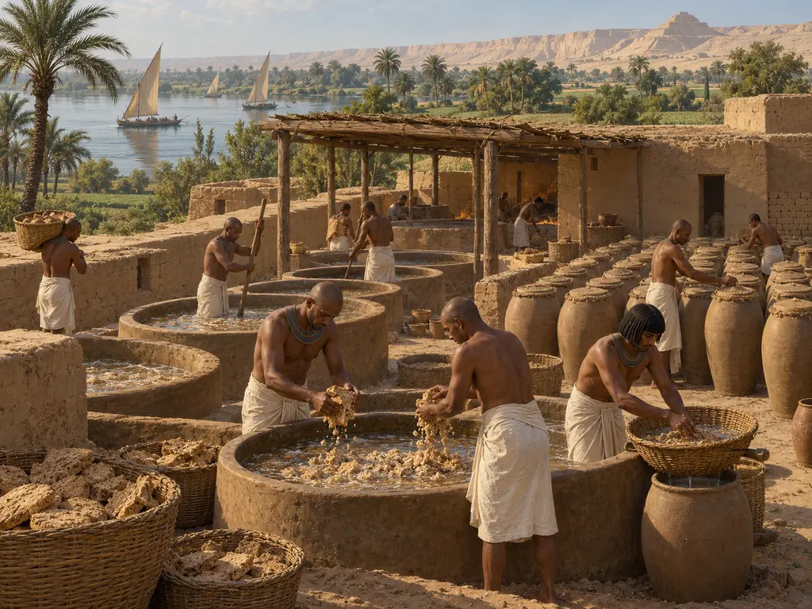
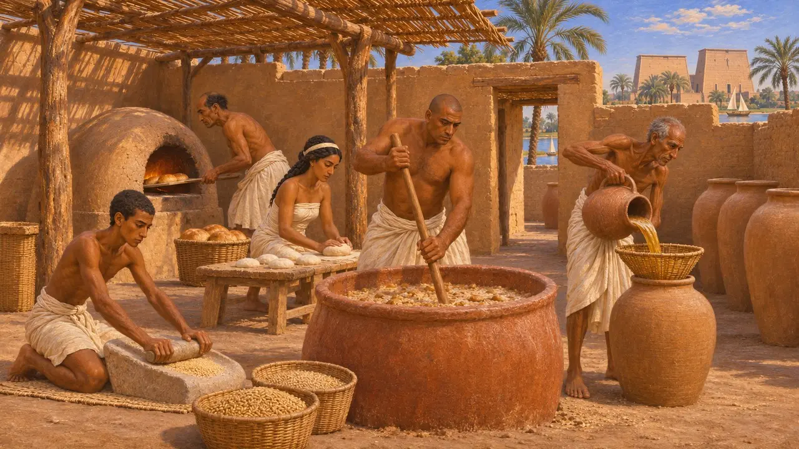
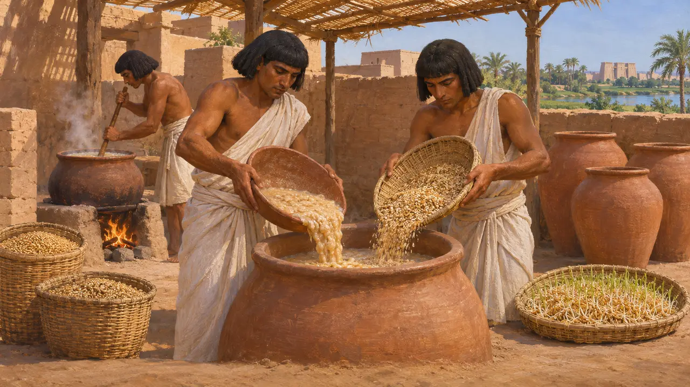
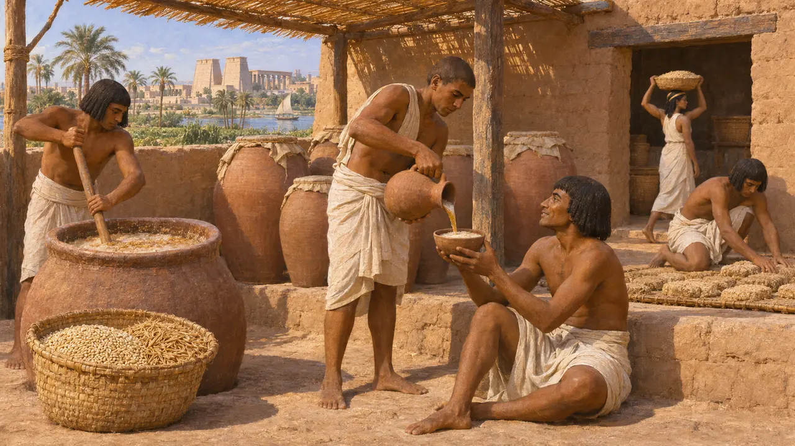
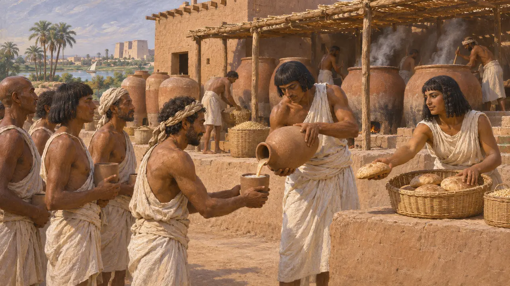
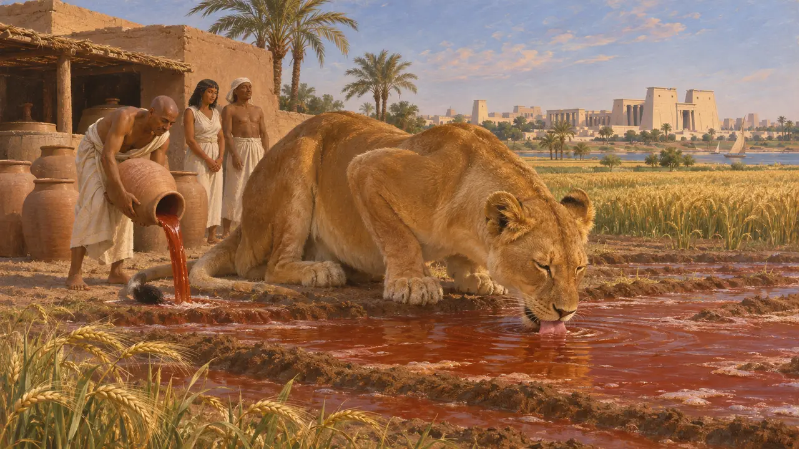

啤酒是埃及的日常饮品，早在波斯人到来之前的数千年里，家户、神庙和庄园便以大麦和二粒小麦酿造啤酒。它既是饮料，也是食物。劳工和官员的口粮以面包和啤酒罐计数。公元前525年波斯征服者攻占孟斐斯时，所接手的酿造体系早已历史悠久。
游戏中： 酿酒坊从粮仓取用大麦，向贵族宅邸供应啤酒，仅在孟斐斯关卡中出现。游戏中以面包入罐酿造的方法是较早的教科书观点；残留物研究表明，古人也使用发芽的谷物，且除大麦外还用二粒小麦。

墓葬壁画与模型中的啤酒
见于史载自古王国起，埃及墓葬中便有酿造的图像。彩绘与浮雕场景，以及随葬的木制模型，展现了工人磨谷、制坯烤饼、在缸中捣碎面饼并将汁液倒入罐中的情景。底比斯中王国官员美克特拉墓中出土的一座面包坊兼酿酒坊模型颇为著名，至今仍保存完好。
H. E. Winlock, Models of Daily Life in Ancient Egypt from the Tomb of Meket-Re' at Thebes, 1955

啤酒究竟如何酿造
争夺中学者们长期认为，埃及啤酒是将半熟的面包掰碎泡入水中发酵而成。然而，对阿马尔奈和代尔麦地那酿酒器皿残留物的显微研究发现，其中是发芽谷物与煮熟谷物的混合物，并无明显的面包痕迹。如今许多人认为酿造方法多种多样，而那些面包场景或许只描绘了工序的一部分。
D. Samuel, Investigation of ancient Egyptian baking and brewing methods by correlative microscopy, Science, 1996

希罗多德论大麦酒
古代记述希罗多德自称到过埃及，时间大约在公元前五世纪中叶，即波斯征服后约两代人。他记载埃及人因国中无葡萄藤而饮用大麦酿的酒。他所说的饮品就是啤酒。他给出的理由并不对，因为埃及种植葡萄，也为权贵酿造葡萄酒，但这条记载表明了寻常的饮啤酒习俗在一位希腊访客眼中是何模样。
Herodotus 2.77

作为工钱与口粮的啤酒
见于史载纵观埃及历史，劳作的报酬大多以面包和啤酒支付，德尔麦地那等工匠村的配给记录中两者皆有。波斯行政机构在其本土也推行类似的制度。大流士在位时以埃兰语书写的波斯波利斯城防泥板，记录了向劳工、旅人和官员发放谷物、葡萄酒和啤酒的情况。
R. T. Hallock, Persepolis Fortification Tablets, 1969

痛饮红色啤酒的女神
后世传说一则写于新王国时期王陵中的埃及神话讲述道：太阳神拉派出他凶猛的神眼——化身为母狮塞赫迈特的女神哈托尔——去毁灭叛逆的人类。为了阻止杀戮，他命人用赭石将啤酒染红，倾洒在田野上。女神以为那是鲜血，便饮下了它，醉后平静下来，饶过了人类。
Book of the Heavenly Cow (New Kingdom royal tombs)
来源
- D. Samuel, Brewing and baking, in P. Nicholson and I. Shaw (eds), Ancient Egyptian Materials and Technology, 2000
- D. Samuel, Investigation of ancient Egyptian baking and brewing methods by correlative microscopy, Science, 1996
- Herodotus 2.77
- H. E. Winlock, Models of Daily Life in Ancient Egypt from the Tomb of Meket-Re' at Thebes, 1955
- R. T. Hallock, Persepolis Fortification Tablets, 1969
- W. Henkelman, The Other Gods Who Are, 2008